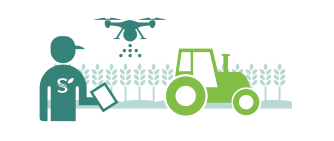
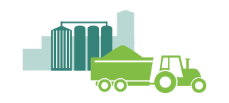
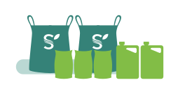
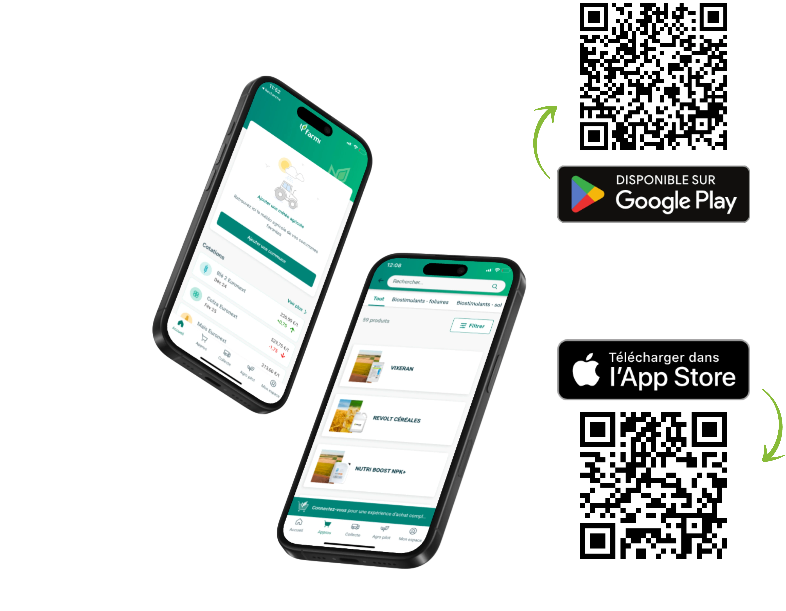
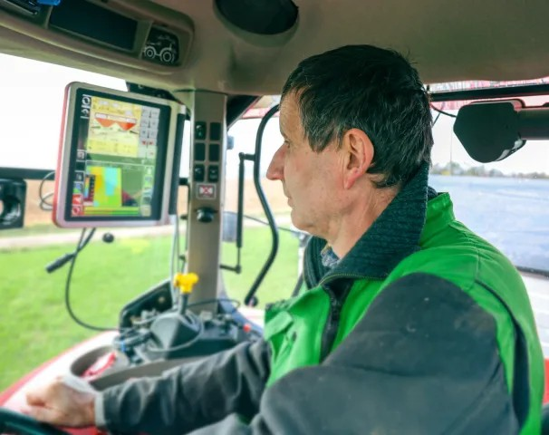
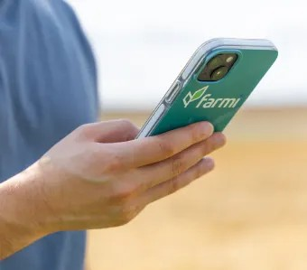
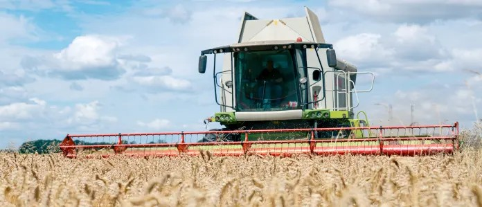
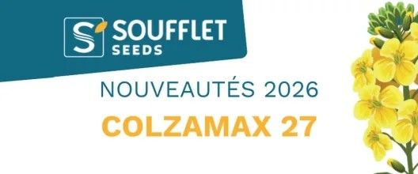

Toute l’expertise de Soufflet Agriculture est dans l’écosystème Farmi
Complet, intuitif et rapide, l’écosystème Farmi vous offre au quotidien toutes les solutions qui vous font gagner en temps et en performance pour gérer votre exploitation.
Expertise
Des experts devoues a vos cotes pour resoudre tous vos problematiques.
Completude
Une gamme exceptionnelle de produits et de services pour satisfaire tous vos besoins.
Simplicite
Une plateforme d'achats ultra-simple et disponible a tout moment.
Efficacite
Reapprovisionnez-vous en un clin d'oeilet gagnez un temps precieux
Des réponses concrètes à vos besoins
3 solutions en 1 pour répondre à tous vos besoins au quotidien dans la gestion de votre exploitation agricole.

Agro Pilot
L'outil conçu pour optimiser vos performances agricoles avec une gestion précise et simplifiée.

Collecte
Des solutions conçues pour vous accompagner dans la valorisation de vos productions.

Appro
Une gamme complète de produits et services dédiés aux professionnels de l'agriculture.

Farmi vous simplifie l'agri
Un écosystème tout en un !
Téléchargez gratuitement l’application Farmi
Créez votre compte client
J’accède au formulaire de création de compte client et remplis les champs demandés
Je reçois un email de confirmation
Je confirme la création de mon compte sur l’email réceptionné
Je reviens sur Farmi et me connecte avec l’email et le mot de passe renseignés lors de mon inscription
Je renseigne mon code client Soufflet Agriculture
Je reçois un email de confirmation
Je confirme l’ajout de mon exploitation sur l’email réceptionné
Profitez de tous les outils Farmi
Trouver au même endroit, avec votre ordinateur ou votre téléphone, tous les produits et services nécessaires pour votre exploitation 24h/24, 7j/7.

Bienvenue sur Farmi, votre plateforme agricole tout-en-un !
Farmi simplifie votre quotidien d’agriculteur en réunissant tous les outils essentiels en un seul endroit.
Que ce soit pour la gestion de vos exploitations, le suivi de vos cultures, l’accès à des services personnalisés ou encore pour échanger avec d’autres professionnels, Farmi est là pour vous accompagner à chaque étape. Avec une interface intuitive et des fonctionnalités innovantes, vous optimisez votre temps et prenez des décisions éclairées pour améliorer vos performances agricoles.
Rejoignez dès maintenant la communauté Farmi et découvrez une nouvelle façon de piloter votre activité agricole.

Plongez dans l’univers agricole qui vous facilite la vie
Bienvenue dans Farmi !
Simple, rapide et fiable, Farmi est la communauté incontournable des agriculteurs connectés. Notre raison d’être : vous proposer un écosystème de solutions pour améliorer votre quotidien et vous permettre de gagner du temps
Nous mettons à votre disposition l’ensemble des données dont vous avez besoin dans votre prise de décision Météo, actualités agricoles, cotations, gestion de votre collecte et de vos approvisionnements et plein d’autres encore. Avec Farmi tout est dans la poche. Alors concentrez-vous sur l’essentiel. Farmi vous simplifie l’agri !

Qui de mieux que vous pour parler de nous ?
N'en perdez pas une miette !
Abonnez-vous à notre newsletter pour rester informé des nouveautés Farmi et des solutions que nous vous apportons pour votre exploitation.
Avec Farmi, on ne peut pas se tromper
Céréalier en Seine-et-Marne, Alain de Cuypère utilise l’application Farmi pour la vente de ses productions, une démarche qui lui offre l’opp...
Farmi : la nouvelle appli gratuite de Soufflet pour les agriculteurs
Météo, marchés, actualités, carte des silos et espace personnel. Voici les cinq fonctionnalités de Farmi, la nouvelle application de Souffle...
L'application Farmi s'enrichit de deux nouvelles fonctionnalités
Un an après sa dernière évolution majeure avec l'ouverture des offres de contrats sur signature en ligne, l'application de Soufflet Agricult...
Toute l'actualite agricole
Retrouvez toute l'actualité agricole, les tendances du secteur et les dernières innovations pour rester informé et à la pointe des évolutions du marché.

28 mai 2026
29 Janv. 2026

 Agronomie
Agronomie
Le paysage varietal en Orge ...
18 varietes sous numero sont venus challenger RGT-Planet, variete preferee...
9 Janv. 2026
Disponibilité et simplicité de la plateforme d'achat
Gamme complète pour répondre à vos besoins
Des experts à l'écoute pour étudier vos problématiques
Gain de temps dans vos réapprovisionnements